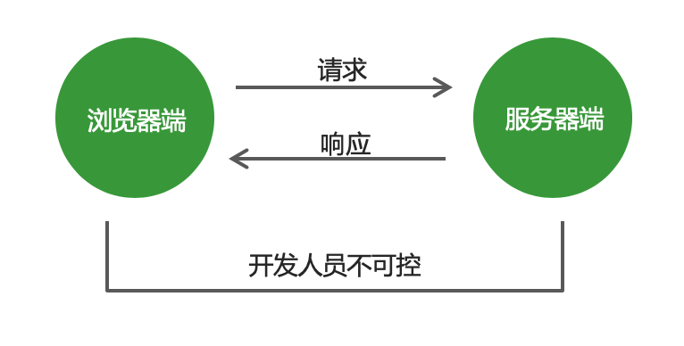
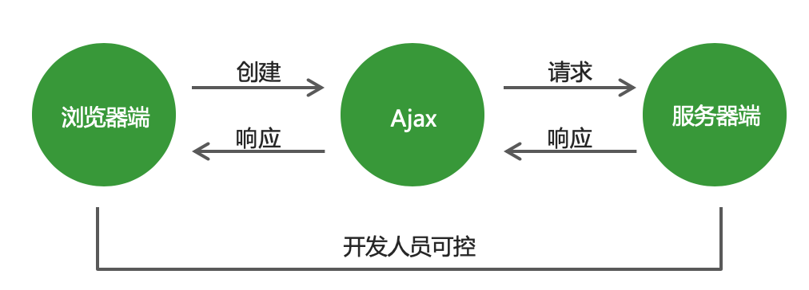
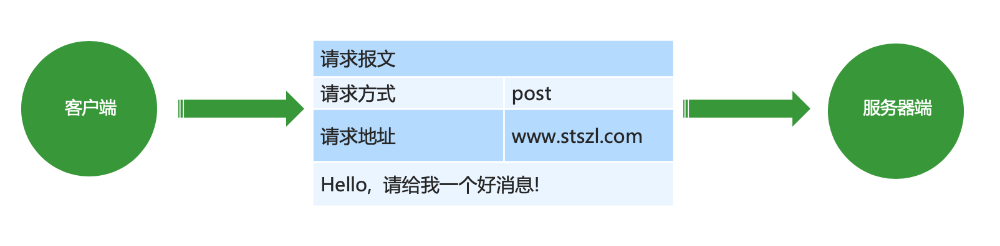
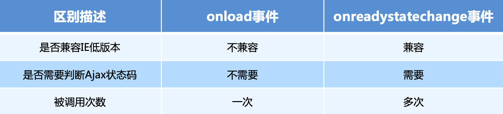

1. Ajax 基础
1.1 传统网站中存在的问题
- 网速慢的情况下，页面加载时间长，用户只能等待
- 表单提交后，如果一项内容不合格，需要重新填写所有表单内容
- 页面跳转，重新加载页面，造成资源浪费，增加用户等待时间
1.2 Ajax 概述
Ajax：标准读音 [ˈeɪˌdʒæks] ，中文音译：阿贾克斯
它是浏览器提供的一套方法，可以实现页面无刷新更新数据，提高用户浏览网站应用的体验。
1.3 Ajax 的应用场景
- 页面上拉加载更多数据
- 列表数据无刷新分页
- 表单项离开焦点数据验证
- 搜索框提示文字下拉列表
1.4 Ajax 的运行环境
Ajax 技术需要运行在网站环境中才能生效，可以使用Node创建的服务器作为网站服务器。
2 Ajax 运行原理及实现
2.1 Ajax 运行原理
Ajax 相当于浏览器发送请求与接收响应的代理人，以实现在不影响用户浏览页面的情况下，局部更新页面数据，从而提高用户体验。


2.2 Ajax 的实现步骤
创建 Ajax 对象
var xhr = new XMLHttpRequest();告诉 Ajax 请求地址以及请求方式
xhr.open('get', 'http://www.example.com');发送请求
xhr.send();获取服务器端给与客户端的响应数据
xhr.onload = function () { console.log(xhr.responseText); }
2.3 服务器端响应的数据格式
在真实的项目中，服务器端大多数情况下会以 JSON 对象作为响应数据的格式。当客户端拿到响应数据时，要将 JSON 数据和 HTML 字符串进行拼接，然后将拼接的结果展示在页面中。
在 http 请求与响应的过程中，无论是请求参数还是响应内容，如果是对象类型，最终都会被转换为对象字符串进行传输。
JSON.parse() // 将 json 字符串转换为json对象2.4 请求参数传递
传统网站表单提交
<form method="get" action="http://www.example.com">
<input type="text" name="username"/>
<input type="password" name="password">
</form>
<!– http://www.example.com?username=zhangsan&password=123456 -->GET 请求方式
xhr.open('get', 'http://www.example.com?name=zhangsan&age=20');POST 请求方式
xhr.setRequestHeader('Content-Type', 'application/x-www-form-urlencoded') xhr.send('name=zhangsan&age=20');2.5 请求报文
在 HTTP 请求和响应的过程中传递的数据块就叫报文，包括要传送的数据和一些附加信息，这些数据和信息要遵守规定好的格式。

2.6 请求参数的格式
application/x-www-form-urlencoded
name=zhangsan&age=20&sex=男application/json
{name: 'zhangsan', age: '20', sex: '男'}
在请求头中指定 Content-Type 属性的值是 application/json，告诉服务器端当前请求参数的格式是 json。
JSON.stringify() // 将json对象转换为json字符串注意：get 请求是不能提交 json 对象数据格式的，传统网站的表单提交也是不支持 json 对象数据格式的。
2.7 获取服务器端的响应
Ajax 状态码
在创建ajax对象，配置ajax对象，发送请求，以及接收完服务器端响应数据，这个过程中的每一个步骤都会对应一个数值，这个数值就是ajax状态码。
- 请求未初始化(还没有调用open())
- 请求已经建立，但是还没有发送(还没有调用send())
- 请求已经发送
- 请求正在处理中，通常响应中已经有部分数据可以用了
- 响应已经完成，可以获取并使用服务器的响应了
xhr.readyState // 获取Ajax状态码2.8 获取服务器端的响应
onreadystatechange 事件
当 Ajax 状态码发生变化时将自动触发该事件。
在事件处理函数中可以获取 Ajax 状态码并对其进行判断，当状态码为 4 时就可以通过 xhr.responseText 获取服务器端的响应数据了。
// 当Ajax状态码发生变化时
xhr.onreadystatechange = function () {
// 判断当Ajax状态码为4时
if (xhr.readyState == 4) {
// 获取服务器端的响应数据
console.log(xhr.responseText);
}
}2.9 两种获取服务器端响应方式的区别
2.10 Ajax 错误处理
网络畅通，服务器端能接收到请求，服务器端返回的结果不是预期结果。
可以判断服务器端返回的状态码，分别进行处理。xhr.status 获取http状态码
网络畅通，服务器端没有接收到请求，返回404状态码。
检查请求地址是否错误。
网络畅通，服务器端能接收到请求，服务器端返回500状态码。
服务器端错误，找后端程序员进行沟通。
网络中断，请求无法发送到服务器端。
会触发xhr对象下面的onerror事件，在onerror事件处理函数中对错误进行处理。
2.11 低版本 IE 浏览器的缓存问题
问题：在低版本的 IE 浏览器中，Ajax 请求有严重的缓存问题，即在请求地址不发生变化的情况下，只有第一次请求会真正发送到服务器端，后续的请求都会从浏览器的缓存中获取结果。即使服务器端的数据更新了，客户端依然拿到的是缓存中的旧数据。
解决方案：在请求地址的后面加请求参数，保证每一次请求中的请求参数的值不相同。
xhr.open('get', 'http://www.example.com?t=' + Math.random());3. Ajax 异步编程
3.1 同步异步概述
同步
- 一个人同一时间只能做一件事情，只有一件事情做完，才能做另外一件事情。
- 落实到代码中，就是上一行代码执行完成后，才能执行下一行代码，即代码逐行执行。
console.log('before'); console.log('after');
异步
- 一个人一件事情做了一半，转而去做其他事情，当其他事情做完以后，再回过头来继续做之前未完成的事情。
- 落实到代码上，就是异步代码虽然需要花费时间去执行，但程序不会等待异步代码执行完成后再继续执行后续代码，而是直接执行后续代码，当后续代码执行完成后再回头看异步代码是否返回结果，如果已有返回结果，再调用事先准备好的回调函数处理异步代码执行的结果。
console.log('before');
setTimeout(
() => { console.log('last');
}, 2000);
console.log('after');3.2 Ajax 封装
问题：发送一次请求代码过多，发送多次请求代码冗余且重复。
解决方案：将请求代码封装到函数中，发请求时调用函数即可。
ajax({
type: 'get',
url: 'http://www.example.com',
success: function (data) {
console.log(data);
}
})